Статут закладу освіти
Ліцензії на провадження освітньої діяльності та сертифікати про акредитацію освітніх програм
Ліцензування
Структура та органи управління закладу освіти
Навчальне середовище ліцею складається з навчання:
Внутрішнє середовище ліцею має свою культуру: умови, правила, стосунки. Моделлю юридичного ліцею, як профільного навчального закладу, закладу нового типу, є модель активної школи, школи правової освіти.
Складові профільного навчання:
Всього педпрацівників - 21
Мають кваліфікаційну категорію:
З них:
Мають відзнаки:
Освітні програми, що реалізуються в закладі освіти, та перелік освітніх компонентів, що передбачені відповідною освітньою програмою HМО -1493
Територія обслуговування, закріплена за закладом освіти його засновником (для закладів дошкільної та загальної середньої освіти) - немає; Ліцензований обсяг та фактична кількість осіб, які навчаються у закладі освіти - 180 та 257 учнів відповідно; Мова (мови) освітнього процесу - українська мова; Наявність вакантних посад, порядок і умови проведення конкурсу на їх заміщення (у разі його проведення): фізика - 7 годин (за сумісництвом); Матеріально-технічне забезпечення закладу освіти (згідно з ліцензійними умовами); Напрями наукової та/або мистецької діяльності (для закладів вищої освіти) - немає; Наявність гуртожитків та вільних місць у них, розмір плати за проживання - немає; Результати моніторингу якості освіти Річний звіт про діяльність закладу освіти;Щорічний звіт директора
Щорічний звіт директора ліцею про результати роботи в 2020-2021 н.р.Виступ учениці юридичного Харченко Аліни ліцею на конкурс до 76 річниці Пепремоги над нацизмом (районний конкурс)
Виступ учня юридичного ліцею Манзарука Руслана на конкурс до 76 річниці Пепремоги над нацизмом (районний конкурс)
Віртуальна екскурсія по ліцею #8
Зони відпочинку
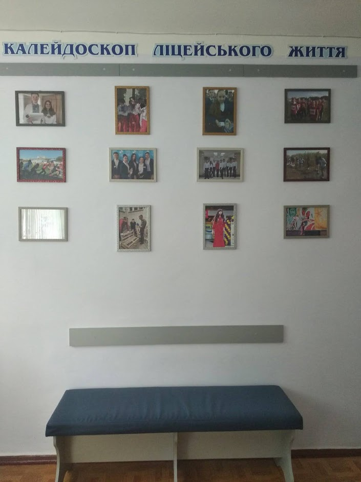 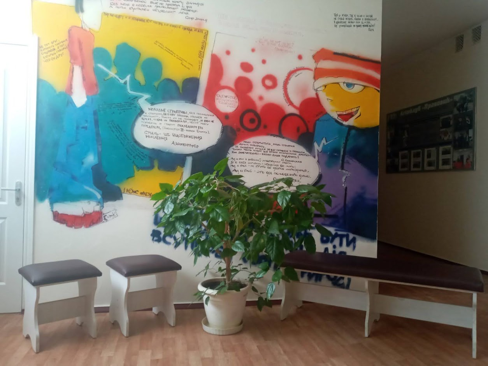 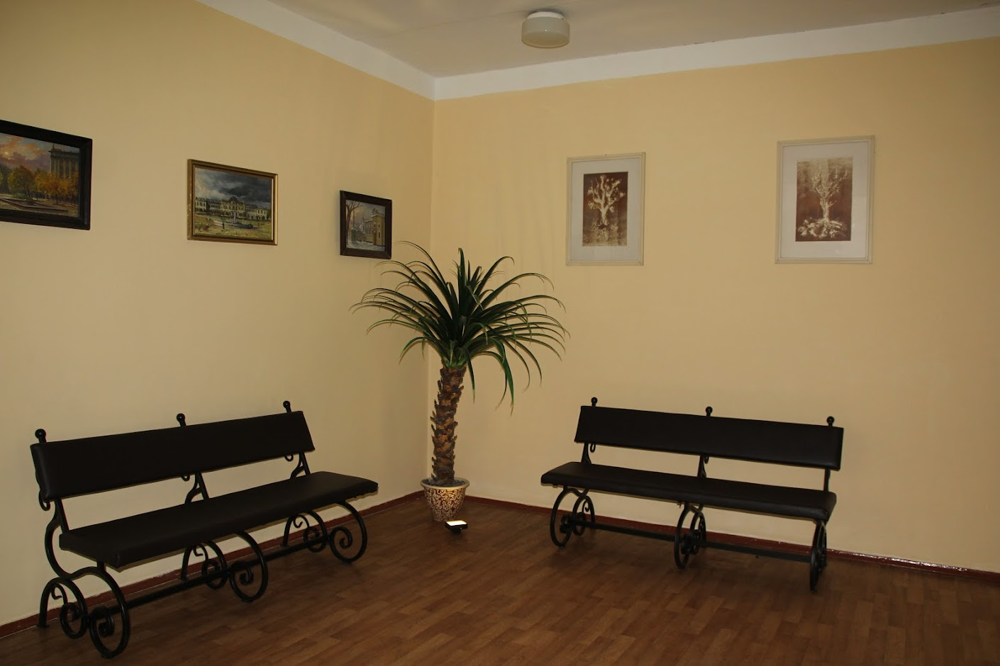Кабінет біології
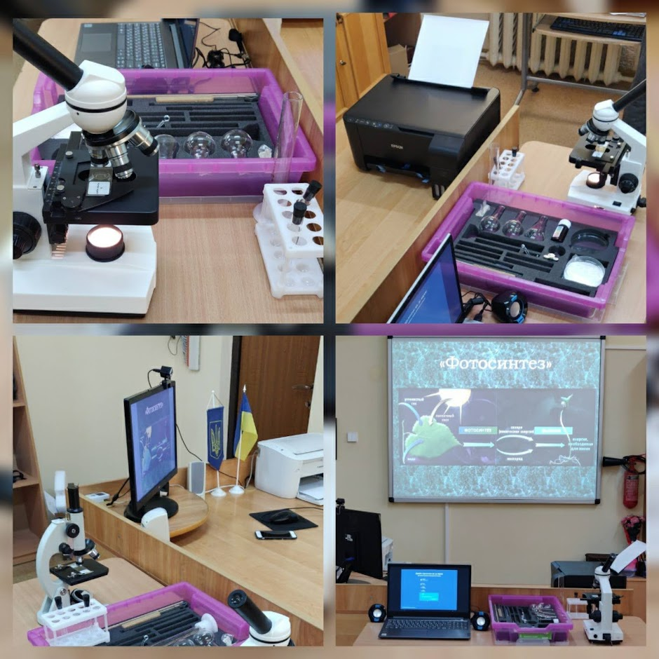 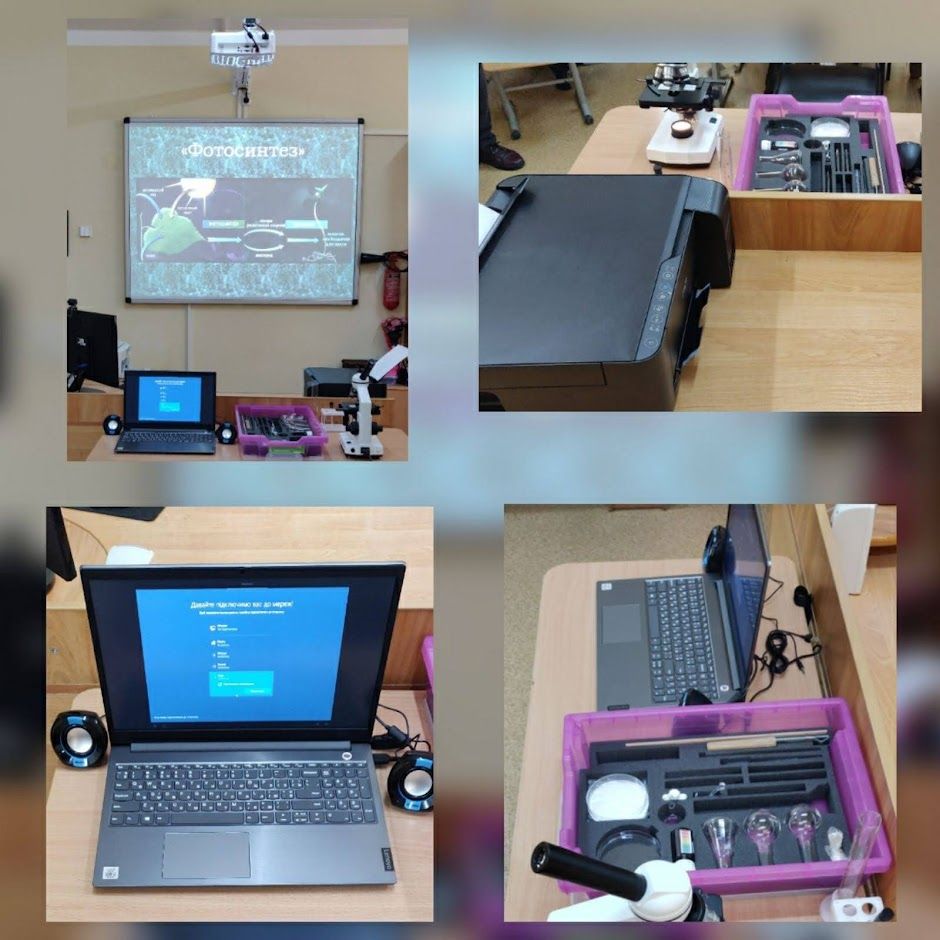Капітальний ремонт методичного кабінету
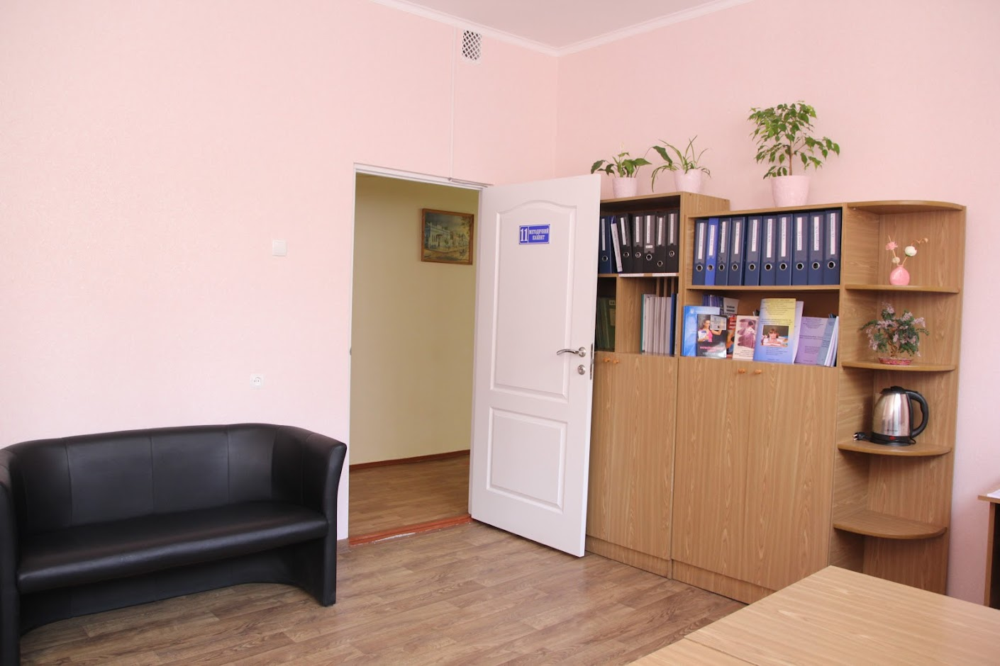 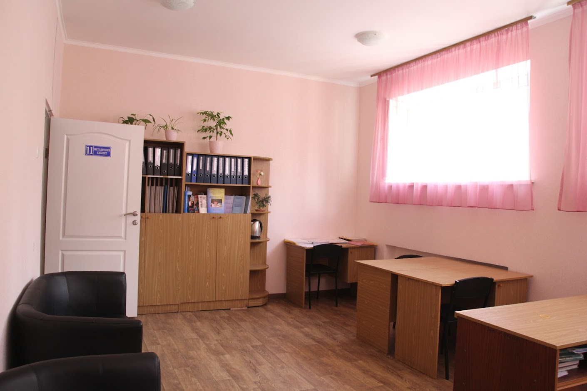Новий кабінет №24 (кабінет мистецтва - студія креативу)
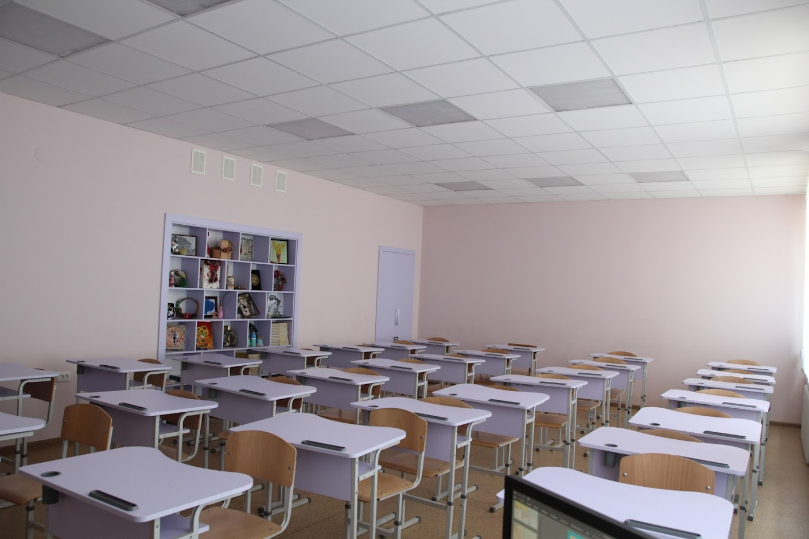 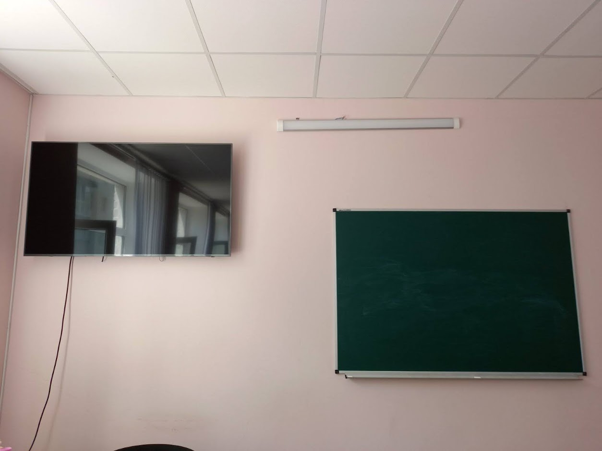Фото щодо інформатизації освіти
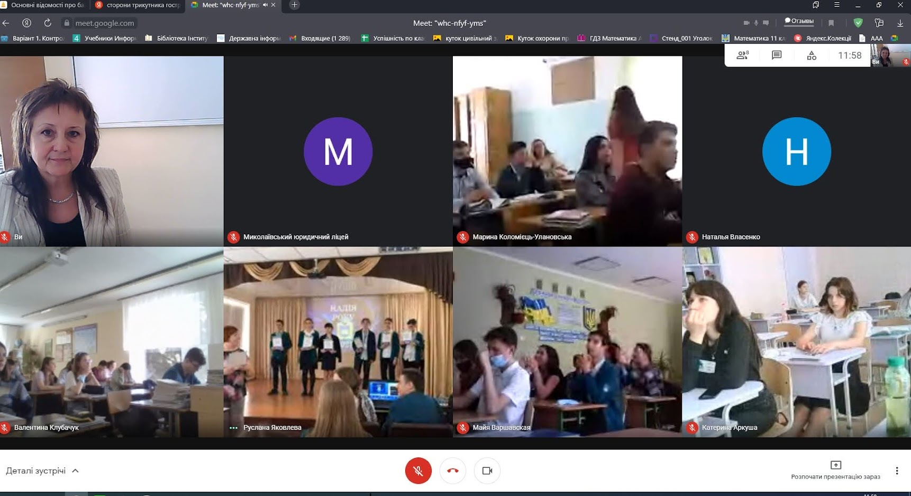 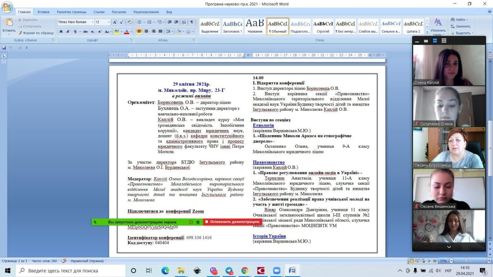 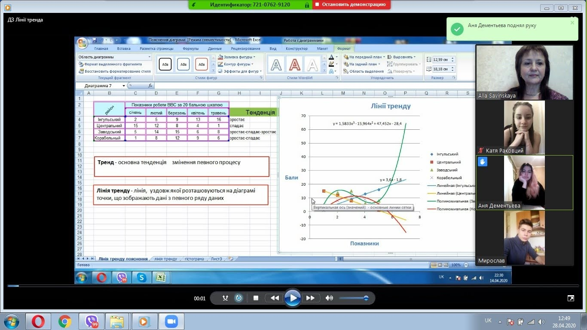Правила прийому до закладу освіти
Тим, хто мріє стати юристом, політологом, державним службовцем, дипломатом, перекладачем, поліцейським, екологом, логістом, отримати високий рівень підготовки до ЗНО, хоче навчатися в закладах вищої освіти, то в цьому допоможе Миколаївський ліцей #8. Ліцей здійснює навчання за суспільно-гуманітарним, природничо-математичним, філологічним напрямками. Вчителі ліцею - професіонали своєї справи. Учителі ліцею мають вищу і першу категорії. Серед них є заслужений учитель України, кандидати наук, учителі-методисти, старші вчителі, відмінники освіти. Приміщення ліцею комфортне, кожен навчальний кабінет оснащений комп'ютерною технікою, учні мають вільний доступ до Інтернету, є їдальня. Навчання в ліцеї безкоштовне. У ліцеї дев'ять класів, в яких навчається 276 учнів і кожен з яких має можливість для самореалізації. Учителі здійснюють індивідуальний підхід до кожної дитини. Шановні батьки, допоможіть своїй дитині зробити правильний вибір, адже це їхнє майбутнє!
Ліцей забезпечує профільну середню освіту суспільно-гуманітарного, природничо-математичного, філологічного напрямків за наступними профілями на базі 10-11 класів: